The Axis
Poland to Berlin
From the first days of September 1939 to the last stand in the Reich, and a what-if road to Washington for the boldest commanders.
The Second World War · 1939 – 1945
A turn-based hex wargame for iPhone and iPad. Build and lead an army of your own, and take it with the Wehrmacht, the Western Allies or the Red Army across 48 battles on hand-drawn operational maps.
Choose your side
How you win decides where the war goes next: a fast, decisive victory opens a different road through the campaign, and a defeat sends you down a harder one.
Poland to Berlin
From the first days of September 1939 to the last stand in the Reich, and a what-if road to Washington for the boldest commanders.

Dunkirk to the Elbe
The British and Americans from the beaches of Dunkirk through the desert, Italy and Normandy to the Rhine and the race for Berlin.

From the frontier to the Reichstag
Survive 1941, hold Moscow and Stalingrad, then turn the tide at Kursk and drive the long road west to Berlin.
See it played
Select a unit, move it, read the odds, attack, and watch the enemy answer.
Recorded on iPhone, without sound. Every battle in the game is also filmed as it is fought: watch it again from the result screen, save it as a video and share it.
One mission, as the game shows it
All 48 battles have a voiced briefing before the fight and a voiced “What really happened” after it. Here is one of them: Kursk, July 1943.
Read every briefing and every history on the Campaigns page.
What's inside

Your units are yours: name them, mark them with an insignia, and carry them from battle to battle as they rise from Green to Guards, win medals, earn traits and cheat death. In Battle Mode, raise a Battle Group for each side from every unit of the war. Your Army.
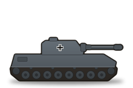
Create yourself and rise from Major to Field Marshal over 20 levels. Levels bring attributes that strengthen the whole army; Command Points unlock thirteen tactics, from an artillery barrage to air superiority, winter gear or an airlift into a pocket.
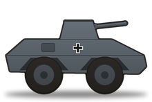
Post them to study historical battles, study the enemy's weaknesses or train troops. Each of the ten chapters of the Field Manual unlocks advice on the battlefield and a training lesson of its own.
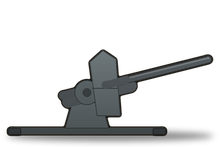
Before you commit, the preview shows attack and defence, every modifier from terrain to experience, and the losses each side can expect. A unit's card lists everything in force on it, from the weather to supply trouble.
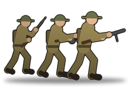
Your core units carry their experience, names, medals and traits from battle to battle, from Green recruits to Guards. nine kinds of medal give permanent bonuses. Lose a veteran and it's gone for good. Every medal.

Five Basic Training lessons on a real battle map, every step checked by what you actually do, then a lesson for each chapter of the Field Manual. Your first battle.
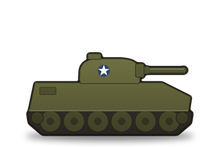
Three stars to earn in every battle, a Daily Operation every day and a Weekly Operation every week, each with its own twist and a Game Center leaderboard.
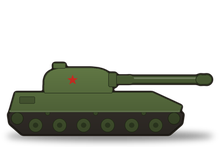
From your first victory to every front won, plus a war map of your campaign and a battle report to share. See them all.

Any of the 48 battles against another player through Game Center, or Battle Mode with an army of your own. Move when it suits you; a notification tells you when it's your turn again.
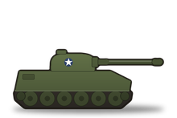
One purchase, everything included. Every battle plays offline, and saves sync through your own iCloud account between iPhone and iPad.
On the battlefield
The classic loop of move, attack, capture and resupply, with the things that decided real battles: supply, pockets, nerve and the weather.

Supply runs from your edge of the map, further along the roads, through the towns you hold and from the railheads in any weather. Units cut off lose strength every turn. Surround a city and its garrison lives on its stores, then weakens turn by turn until the ring is broken.

Close a ring round two or more enemy units and the camera pulls back to show the pocket, named for the nearest town. Trapped units lose heart and surrender; a tank or gun is sometimes taken intact and joins your army. The enemy closes rings too.

From Broken to Inspired, morale moves only when a fight goes clearly better or worse than its odds, and it spreads to the units beside it. At the ends of the scale a unit may become a Leader, or Unbreakable.

Destroy three tanks and become Tank Hunters; hold a town through three attacks and become Street Fighters; come through a winter battle Winter-Hardened. Some traits are scars: Shell-Shocked, Battle-Weary, Hesitant. All twelve traits.
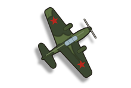
Rain, snow, mud and storms, felt by each type of unit in its own way: infantry walks through rain that bogs down tanks, guns and aircraft lose their aim, and mud keeps aircraft on the ground except from a city's runways. The forecast shows the next three turns.

See only what your units see. Switch the map between Battle, Supply and Intel views, and spend prestige on aerial reconnaissance, agent reports, a signals intercept or a dossier on the enemy commander. March into the unseen and risk an ambush.
The computer sees what you see and rolls the same dice. On Normal and Hard it picks a main effort, gathers before a defended town and goes in together, counter-attacks a town held weakly, and brings a commander and tactics of its own.

A unit that lives through odds that should have destroyed it has Cheated Death, and earns a second chance in every battle after. A kill at long odds is celebrated as Against the Odds, and your general calls the moments of the battle aloud.
Europe and North Africa · 1939 – 1945
Every battle you fight is marked on the campaign map, with the roads still ahead of you.
Every day, and head to head
Operations for when you have ten minutes, and opponents for when you want one.

One short battle a day and one a week, the same for every player, each with a twist: a blizzard, a veteran enemy, fewer turns. Win the Daily Operation day after day to build a streak.

Your best score goes to the day's or week's board, every campaign keeps a score of its own, and multiplayer wins are counted. Watch the leader's film of the battle to see how it was won. How scores are made.

Any of the 48 battles against another player. Each battle is labelled Even, or Favoured against a Challenge, and the harder side pays extra Command Points. Chat as you play, nudge a quiet opponent, and every turn is checked on your own copy of the battle.

Bring an army of your own: a Battle Group for each side of the war, bought with Command Points from every unit of the war, named and given an emblem. Both sides field 2,800 points on the ground of Barbarossa, Kursk and Market Garden, under fog of war, in the weather you choose.

A Battle Group's units always come back. They earn grades, medals, titles from Blooded to Legends, feats such as Tank Killers and The Wall, and an honour for every battle won, all shown in a short ceremony after the match. Battle Groups.

Play your turn whenever you like: a day for each turn unless the match chose 12 hours or 3 days. Your opponent's last turn replays on the map before you move, and your record keeps every match.
History, told with care
Every battle is a real one, briefed by a general of your side and set beside what really happened.

A general of the side you command reads every briefing, and calls out the battle as it happens: a town taken, a ring closed, the last turns. Hear the Kursk briefing.

After each battle your result is set beside the real one: who held each town and when, the account of the battle and what it cost. Read them with the battles.

Win a campaign and your army marches: the road you took, your general's Order of the Day, every unit that came through, the Unit of the Campaign, the Roll of Honour and a citation to share. Lose one, and your general gives a last order instead.

Larger text and a colour vision setting, Reduce Motion honoured, Home Screen and Lock Screen widgets, and up to three commanders sharing one device, each with their own career.
On iPhone and iPad
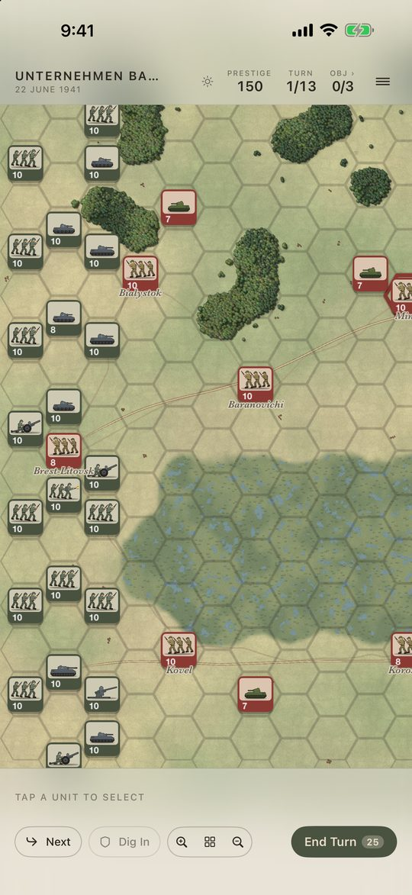
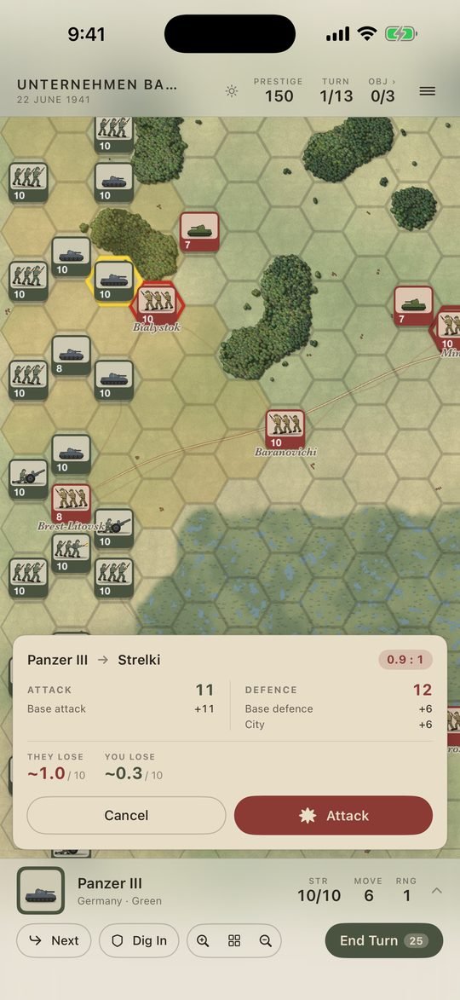
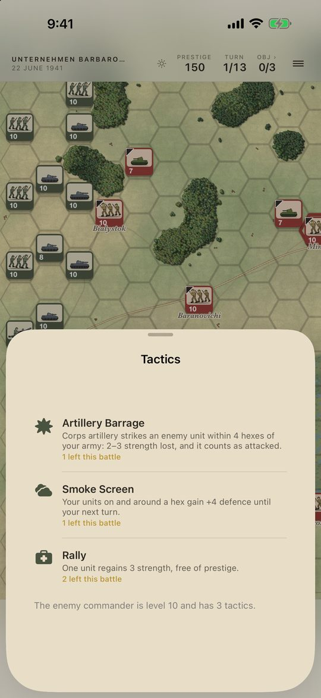
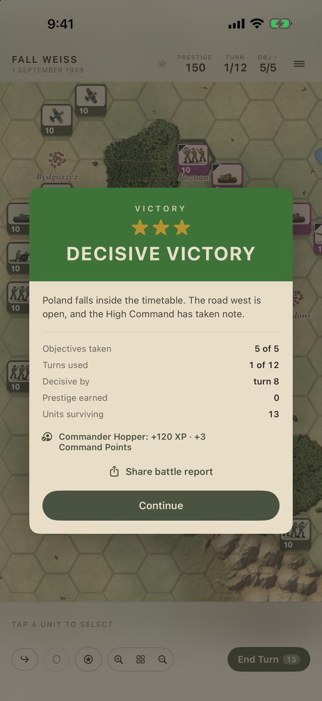
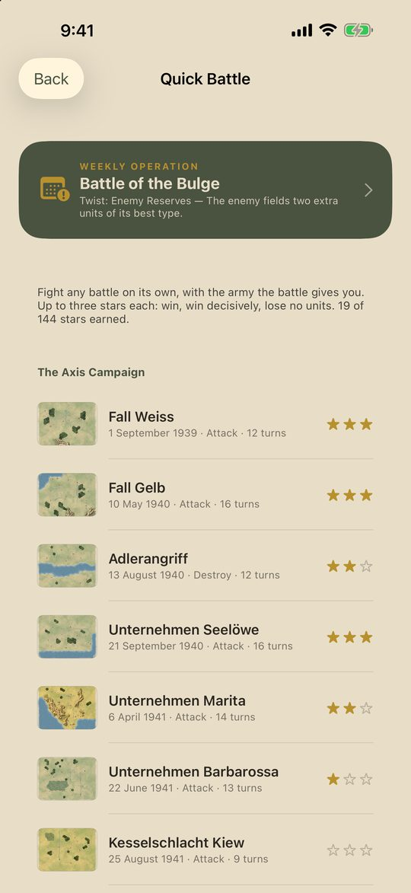
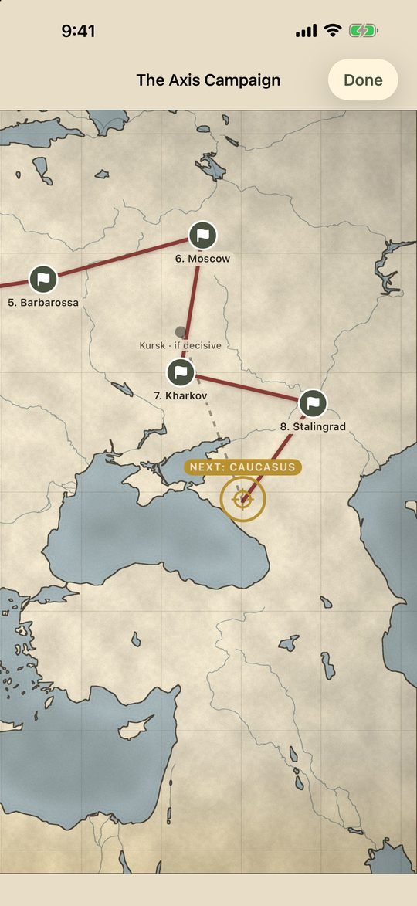
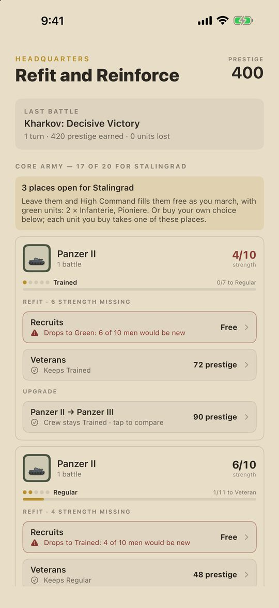
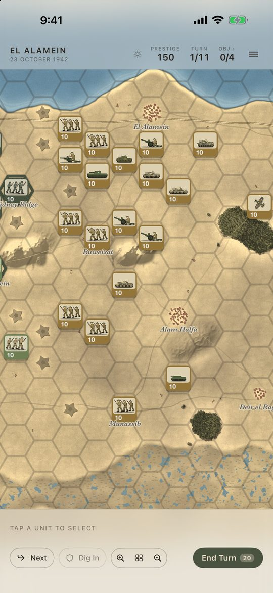
Go deeper
Your campaign army and Battle Groups, experience, every medal, morale and every trait.
Meet your armyAll 126 unit types with their art, numbers and lines of equipment.
Open the ArmouryThe complete rules, in the game's own words, with your first battle step by step.
Read the guideEvery battle's briefing, objectives and clock, and what really happened.
See all 48 battlesWhat each Game Center board ranks, how scores are made, and every achievement.
See the boardsSupport
Questions, bug reports and suggestions are welcome at levihopper+panzerkeil@gmail.com.
For a bug, please include your device, iOS version, and the battle and turn where it happened.
Starting a different campaign, difficulty levels, saves and iCloud, achievements, postings and the Field Manual.